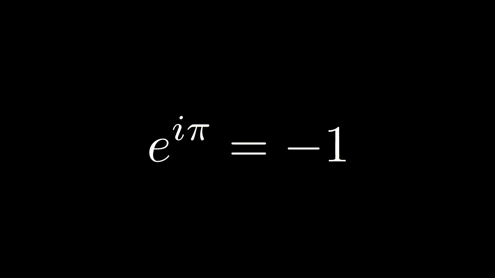

OneByOneTransform

¿Qué hace?
Transforma los elementos del primer grupo en los del segundo, uno por uno y de forma ordenada.
Parámetros principales
vgrp1
(
Mobject
): Grupo de entrada.
vgrp2
(
Mobject
): Grupo final al que se transforma.
lag
(
float
): Retardo entre las transformaciones individuales.
preset
(
int
): Determina el orden de los elementos (por ejemplo, de izquierda a derecha).
debug
(
bool
): Si está activado, imprime detalles sobre los emparejamientos y el orden.
**kwargs
: Argumentos adicionales compatibles con
default_args
.
← Volver a la biblioteca